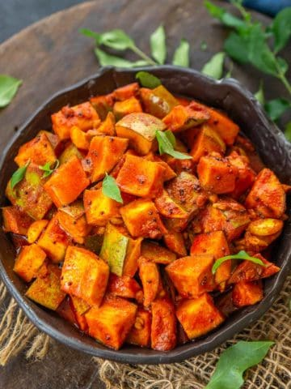

Kerala Style Instant Mango Pickle

Description
Kerala-Style Mango Pickle (Nurukku Manga Achar) is a simple, instant pickle made using raw green mangoes. This pickle is popularly made for sadhya for festivals (onam and vishu) and special occasions.
This Kerala mango pickle comes together in under 45 minutes (including the rest time) using simple ingredients. It is apt for the days you crave a fresh mango pickle.
Ingredients
- Raw Mango
- Sesame Oil
- Kashmiri Red Chilli Powder
- Turmeric Powder
- Mustard Seeds
- Salt
How to make Mango Pickle
- Wash mangoes and wipe them well with a kitchen towel. Cut the flesh into 1-inch cubes with the skin on. Discard the pit.
- Add salt to the mangoes.
- Mix well and keep aside for 30 minutes.
- Add mustard seeds and fenugreek seeds to a mortar and pestle, and make a coarse powder.
- Heat sesame oil in a pan over medium heat. Once the oil is hot, add mustard and fenugreek seeds powder and fry for 5-6 seconds.
- Add asafetida, garlic cloves, and curry leaves and fry for 4-5 seconds.
- Now add turmeric powder, red chili powder, and vinegar, and fry for another 3-4 seconds.
- Add the mango cubes and mix well.
- Remove the pan from heat.
- Cool the pickle entirely and transfer it to a sterilized container. The pickle is ready to serve.